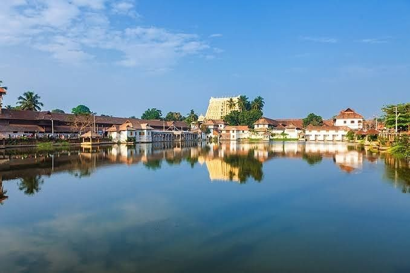
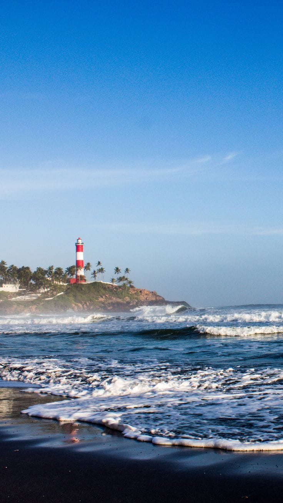
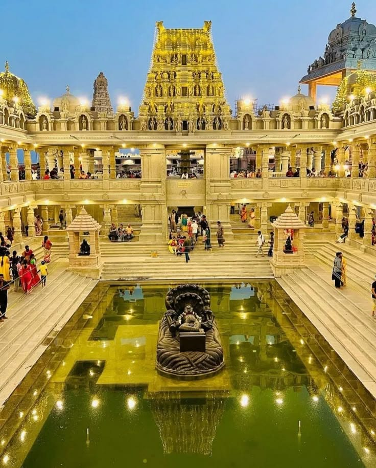
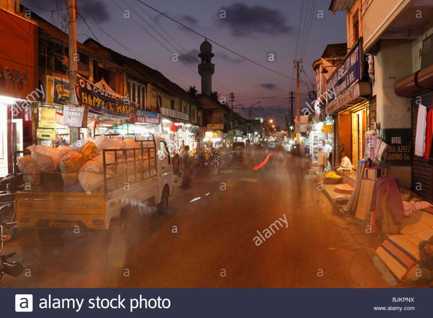
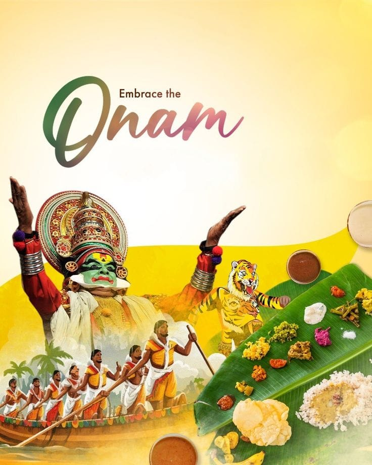
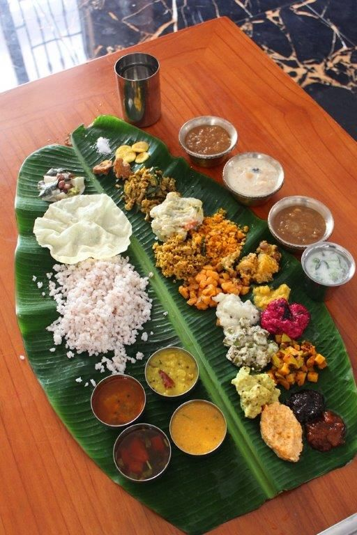

Thiruvananthapuram Over_all View
Thiruvananthapuram, the capital of Kerala, is a coastal city known for its temples, beaches, and cultural heritage. It beautifully blends tradition with modernity, making it a vibrant destination.
Peaceful Nature Spot (Kovalam Beach)
Kovalam Beach is one of the most famous beaches in Kerala, offering golden sands, palm-lined shores, and a peaceful atmosphere for relaxation and water activities.


Historical Place (Padmanabhaswamy Temple)
The Padmanabhaswamy Temple is a sacred Hindu temple dedicated to Lord Vishnu. Known for its architectural grandeur and spiritual significance, it is a major landmark of Thiruvananthapuram.
Local Market (Chalai Bazaar)
Chalai Bazaar is a bustling market offering spices, textiles, jewelry, and local goods. It reflects the lively culture and commerce of the city.


Famous Festival (Onam)
Onam is Kerala’s most celebrated festival, marked by traditional dances, boat races, and feasts. In Thiruvananthapuram, it is celebrated with grandeur and devotion.
Famous Local Food Items (Meals → Kerala Sadya)
Kerala Sadya is a traditional vegetarian feast served on banana leaves, consisting of multiple dishes. It is a highlight of Kerala’s cuisine and culture.
